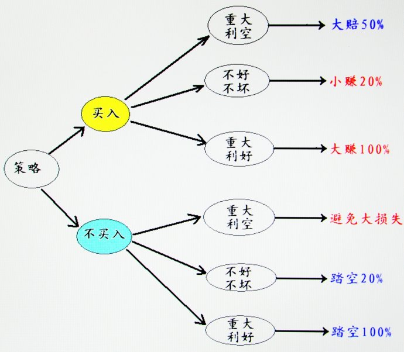

第66篇•短线博弈的技巧（3）
——由重庆啤酒涨停板想到的
谷为陵
3、对重啤疫苗三种可能结果的博弈策略
我在上篇博文中指出，重啤疫苗有三种可能的揭盲结果，与之相对应的，在揭盲后重啤的股价也有三种可能的走势。我们现在就来讨论对重啤疫苗三种可能的揭盲结果和股价的三种可能的走势博弈策略，或者说最优应对策略、
为方便讨论，我们假设重啤疫苗三种可能的揭盲结果的可能性各占1/3，并且预计，在出现重大利空的情况下，重啤会暴跌50%；在不好不坏的情况下，重啤会上涨约20%（该涨幅是指以重庆啤酒11月23日收盘价为基准计算，而非复牌后的涨幅）；在出现重大利好的情况下，重啤会上涨100%。由此我们可以推导出下面的博弈决策树：

我解释一下以上博弈决策树的含义：
在重啤股价公告停牌前两天，我们的决策只有两个：买入或者不买入。
在买入的情况下，面对三种不同的揭盲结果，会产生三种不同的收益情况：大赔、小赚和大赚。可以看出，在买入情况下，赚钱的概率要高于赔钱的概率。
在不买入的情况下，面对三种不同的揭盲结果，也会产生三种不同的预期收益情况：避免了损失、小踏空和大踏空。要特别指出的是，在充分分析了博弈的各种可能性后，若因不买入而造成踏空，可以视为此次投资失败，并计为负收益。可以看出，在不买入情况下，踏空的概率要高于成功避险的概率。
下面的博弈决策树，是在买入情况下的赔钱与赚钱以及不买入情况下的成功避险与踏空的概率分布：
博弈的结论是，在假设重啤疫苗三种揭盲结果各占1/3的可能性的前提下，于重啤股价公告停牌前两天买入，赚钱的概率约2/3；而若不买入，踏空的概率约2/3。
我们看到的重啤股价走势情况与博弈理论推测基本相符。在重啤公告的当天，其股价很快冲上涨停板，这是因为“抢盘人”预计到了这样的结果：假使揭盲结果不好不坏（可能性最大），那么，复牌后股价也会上涨20%，现在抢进，还能够赚10%，因此，当天的涨停板异常凶猛。但第二天，重啤虽然以涨停板开盘，但收盘时却无力封住涨停板。这是因为在这个价位，重啤几乎完成了停牌前的20%涨幅的预期，短线博弈的上涨空间已经没有了。
应该注意的是，我们所说的概率，是指事件发生的可能性，并非确定性。在买入的情况下，虽然从概率上看赔钱的可能性只有1/3,但并不代表这种情况不会发生。为了将投资风险降到最低，在实际操作时，就应该采取降低风险的方法。在本案中，降低风险的方法就是在买入时，控制持仓比例，不要在没有十足的、确定性把握的情况下满仓操作。在本案中，较佳的建仓比例应该是占总资金量的20%左右，可以收益与风险之间达到较好的平衡。
重庆啤酒的故事还没有完结，博弈还会继续：若该公司揭盲结果真的出现重大利好的时候,你买还是不买？……